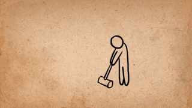
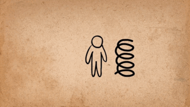
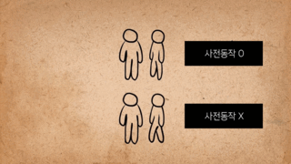

Anticipation
두 번째 법칙은 사전 동작(Anticipation)입니다. 사전 동작은 주요 행동 전에 발생하는 동작으로, 관객의 주목을 끌고 행동을 이해시키는 역할을 합니다.
기본적인 사전 동작
사전 동작은 캐릭터나 물체가 주요 동작을 준비하는 과정에서 발생합니다. 아래의 GIF는 캐릭터가 점프하기 전 자세를 잡는 예제를 보여줍니다.

점프 전의 사전 동작
방향성을 강조하는 사전 동작
사전 동작은 방향을 예측하게 만드는 데도 활용됩니다. 캐릭터가 움직이기 전의 몸짓을 통해 방향성을 전달할 수 있습니다.

방향성을 강조한 사전 동작
힘과 감정의 전달
사전 동작은 캐릭터의 힘과 감정을 강조할 수 있습니다. 예를 들어, 펀치를 날리기 전에 팔을 뒤로 당기는 동작이 힘을 전달합니다.
힘과 감정을 전달하는 동작
복합적인 사전 동작
사전 동작은 여러 요소가 결합될 때 더욱 강력한 효과를 냅니다. 아래의 예제는 복합적인 사전 동작을 통해 행동의 의도를 분명히 전달합니다.

복합적인 사전 동작